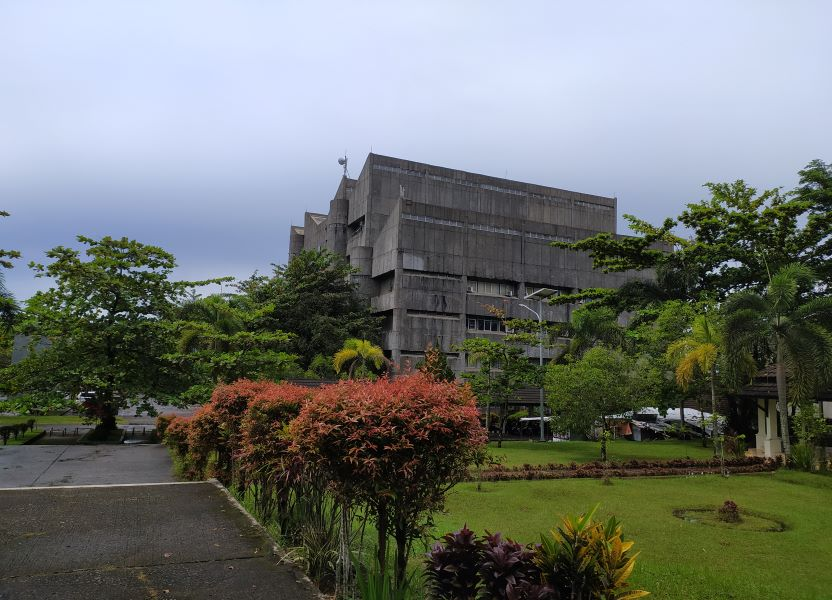

Aini Rahma | 2011513001
Aulia Ramadhani | 2011511026
Faranisa Ramadhani | 2011511009
M. Rayhan Albani | 2011513023


Bank soal ini dibuat untuk membantu sesama mahasiswa untuk membiasakan diri terhadap soal-soal ujian sebelum ujian itu sendiri menghadang. Semoga dengan dibuatnya website ini kami dapat meningkatkan kualitas teman sesama mahasiswa selama berkuliah di Universitas Andalas.
About Us


KELOMPOK 9
Aini Rahma | 2011513001
Aulia Ramadhani | 2011511026
Faranisa Ramadhani | 2011511009
M. Rayhan Albani | 2011513023
BANK SOAL SEMESTER 1
BANK SOAL SEMESTER 2